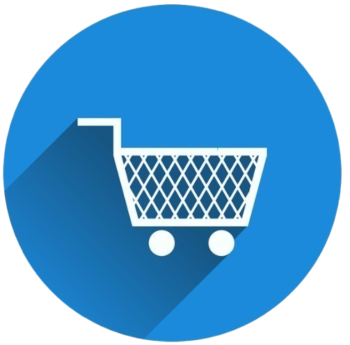

Tentang Saya
Saya Frendy Hansung, pengembang website dan game yang fokus pada pengalaman pengguna dan desain menarik. Ketertarikan saya pada web development dimulai sejak usia 10 tahun, saat masih di sekolah dasar. Sementara itu, minat saya di dunia game muncul saat saya berusia 16 tahun, saat masih di SMK. Saya selalu tertantang untuk belajar hal baru dan terus mengasah keterampilan secara otodidak, baik dalam bekerja mandiri maupun dalam tim, untuk menghasilkan karya digital yang fungsional dan menyenangkan. Saat ini, saya sedang menempuh pendidikan S1 di Institut Badan dan Teknologi Pelita Indonesia, semester 4.
Pengalaman
-
Magang Accounting/Pajak
PT Indah Kiat Pulp & Paper Tbk., Perawang, Riau
15 Juni – 15 September 2022- Membantu tim accounting dalam pengelolaan laporan keuangan bulanan.
- Menyusun laporan pajak bulanan dan tahunan sesuai dengan ketentuan yang berlaku.
- Membantu dalam audit internal dan pengecekan dokumen pajak.
- Melaksanakan tugas administratif lainnya yang diberikan oleh atasan langsung.
Pendidikan
- Institut Bisnis dan Teknologi Pelita Indonesia (IBTPI)
Sedang menempuh pendidikan S1, Semester 4
Program Studi: Teknik Informatika - SMK YPPI Tualang
Tahun Lulus: 2023
Jurusan: Teknik Komputer dan Jaringan - SMP YPPI Tualang
Tahun Lulus: 2020 - SD YPPI Tualang
Tahun Lulus: 2017
Organisasi
-
Staff IT Support
Business Center – SMK YPPI Tualang
Periode: 2021 – 2023
- Membantu pemeliharaan dan troubleshooting perangkat komputer di lingkungan sekolah.
- Menyediakan dukungan teknis saat pelatihan atau acara sekolah.
- Berkontribusi dalam instalasi dan pengelolaan jaringan internal.
Project Saya
Seven Days (Apk)
(itch.io, PlayStore)
Mulai 31/12/2024 , Selesai 23/3/2025
Game dengan tantangan bertahan selama tujuh hari penuh dalam dunia survival yang intens.
Fitur Singkat: Login Google, leaderboard, Save ke Cloud, Redeem Code, IAP.
📱 SevenDays — Closed Testing di Google Play
Cuan Simulator (Apk)
(itch.io, PlayStore)
Mulai 27/3/2024 , On Going
Game idle sederhana dengan fitur upgrade, dan reward iklan.
Fitur Singkat: Upgrade, Login Google, Save ke Cloud, IAP, Redeem Code, Iklan Unity.
📱 Cuan Simulator — Closed Testing di Google Play
🧪 Cuan Simulator — Prototipe Dirilis, Saat Ini On Hold di Itch.io

Prediksi Jamur (Exe)
(itch.io)
Mulai 28/04/2025, Selesai 29/04/2025
Memprediksi jamur apakah dapat dimakan atau tidak, menggunakan algoritma Decision Tree.
Fitur Singkat: Thema, Prediksi dengan 22 Fitur pendukung, lalu 90+ foto edible dan Poisonous.
Website Lokal
Online Shop
Website ini menyediakan tampilan antarmuka (UI) yang praktis dan mudah digunakan. Pengunjung dapat dengan nyaman menjelajahi dan berbelanja berbagai produk yang tersedia dalam tiga kategori utama: Elektronik, Pakaian, dan Aksesoris.
Sertifikat
-
Design Graphic [Lihat]
- Dikeluarkan Oleh :Qwerty Computer (2021)
- Berlaku :Juli 2022 - Sekarang
-
Accounting & Tax Intern [Lihat]
- Dikeluarkan Oleh :Indah Kiat Pulp&Paper (2022)
- Berlaku :September 2022 - Sekarang
-
Bussiness Center [Lihat]
- Dikeluarkan Oleh :SMKS YPPI Tualang (2023)
- Berlaku :Juli 2022 - Sekarang
-
Kompetensi Keahlian
[Lihat]
- Dikeluarkan Oleh :Badan Nasional Sertifikasi Profesi (2023)
- Berlaku :April 2023 - April 2026 (3 tahun)
Piagam
-
Peserta Terbaik Ujian Kompetensi Keahlian (UKK) [Lihat]
- Dikeluarkan Oleh : SMKS YPPI Tualang (2023)